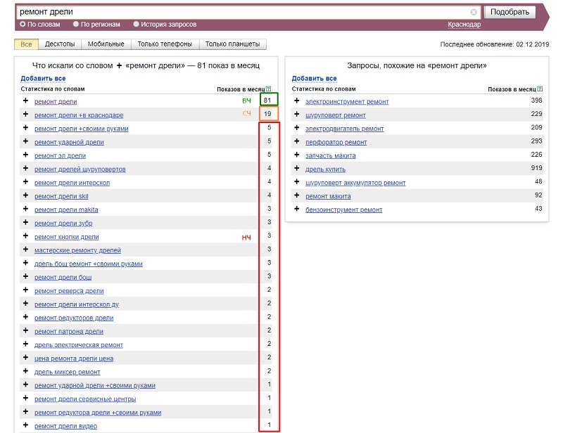
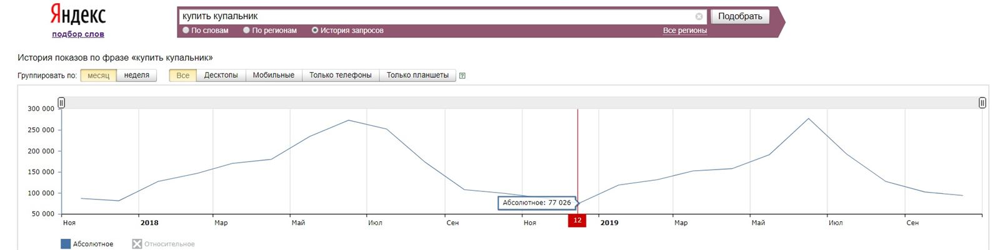
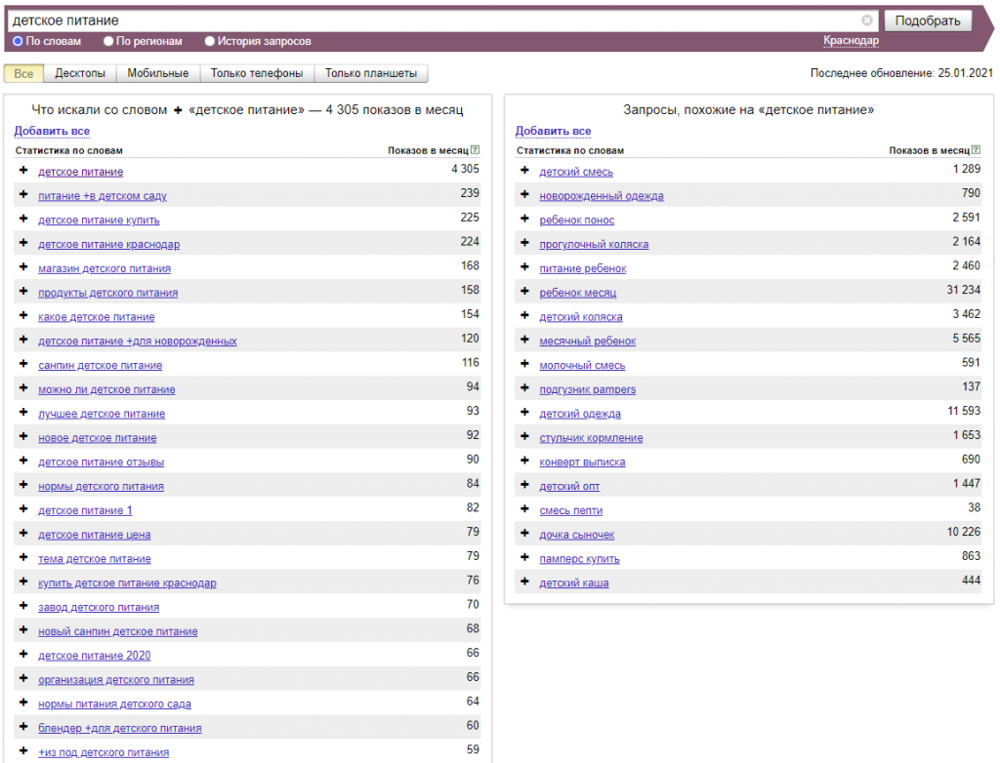
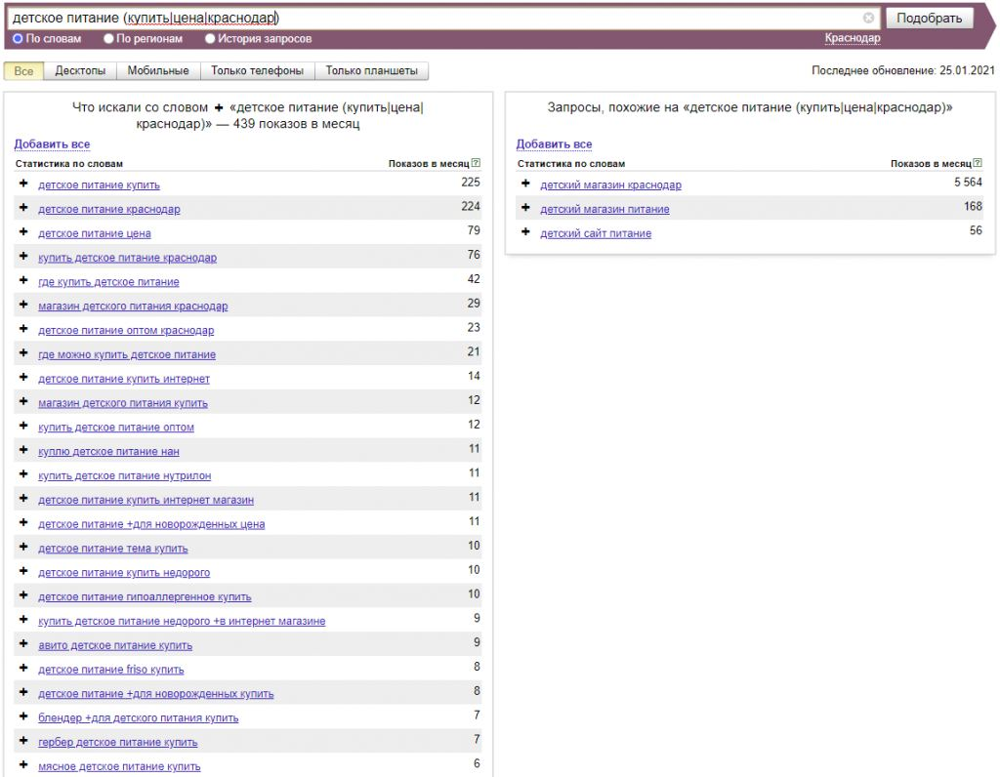

Стоит уточнить что под брендом, в данном случае, подразумевается название компании, а именно - под каким лейблом она представлена в интернете. Поскольку юридическое и маркетинговое название могут отличаться.
Семантическое ядро - основа оптимизации
Диджитал компания собирает список запросов перед началом продвижения (а при создании нового проекта, еще до формирования структуры), для того, чтобы при разработке сайта были созданы все необходимые разделы. Наиболее интересными для клиента являются невитальные запросы, поскольку по названию собственной компании, ресурс и так будет занимать высокие позиции, в большинстве случаев.
Сбор семантики для сайта — очень важный этап, ведь от правильно подобранного списка запросов, будет зависеть, насколько целевые пользователи будут приходить на ваш интернет-магазин или каталог услуг. Процесс подбора запросов является довольно трудоемким процессом, и на данном этапе SEO-специалисты часто пользуются таким инструментами как Key Collector, Serpstat и т.д.
Запросы бывают «коммерческие» и «информационные». Существуют также неопределенные запросы, когда не ясно, что именно хочет получить пользователь. К таким запросам относятся слова без уточнения, например «телевизор» - не понятно, интересует ремонт, покупка или просто обзор моделей.
Частотность запросов
Кроме того, запросы бывают высокочастотными, среднечастотными и низкочастотными, причем в разных тематиках эти критерии могут отличаться. К примеру, в тематике ремонта дрели в Краснодаре, высокочастотным - ВЧ является запрос «ремонт дрели» (81 переход в месяц), среднечастотным - СЧ является «ремонт дрели в Краснодаре» (19 переходов в месяц), все остальные запросы, имеющие 5 и менее переходов, - НЧ.

Частотность запроса — это относительная величина, она обусловлена такими факторами, как:
Региональность. Для сравнения, ВЧ запросы пользователей «аренда самолета» и «аренда самолета цена» имеют частотность 2361 и 550 переход в Москве соответственно (на момент написания статьи). В Краснодаре существует иная картина: частотность этих же ВЧ запросов в несколько раз меньше и равняется 60 переходам в месяц для запроса «аренда самолета» и 14 переходам для «аренда самолета». Это наглядно показывает возможность значительных различий в значении частотности в зависимости от региона.
Популярность тематики. Частотность запросов в Краснодаре с намерением купить айфон значительно выше, чем с намерением купить стоматологическое кресло. Айфон — довольно популярный и востребованный запрос, в то время как стоматологическое кресло представляет собой узкоспециализированную вещь со специфическими свойствами. Широкий разброс величины частотности рассмотренных примеров иллюстрирует, что 28 переходов в месяц для запросов, связанных с покупкой стоматологического кресла — это ВЧ, в то время как менее 300 переходов в тематике айфонов — это уже НЧ.
Сезонность. Частота спроса также зависит от времени года и меняется периодично. Для одних тематик эта зависимость четко прослеживается, для других — не столь очевидна, но все же имеет место быть. Ярким примером зависимости частотности спроса от сезона является история переходов по фразе «купить купальник». На диаграмме видно, что в России спрос на купальники принимает наибольшие значения в июне: около 270 000 показов в месяц. А в зимний период частотность того же самого запроса уменьшается более чем в 3 раза в декабре. Но, несмотря на значительное снижение частотности в зимний период, запрос все же остается высокочастотным со значением 77 026 переходов в месяц.

Таким образом, какие запросы в зависимости от количества переходов считать НЧ, ВЧ и СЧ — определяется с учётом тематики сайта, региона продвижения, сезонности и вида бизнеса. Ведь для одной тематики 1000 переходов — это ВЧ, а для другой это уже будет НЧ.
Частотность запросов можно определить с помощью специальных инструментов и сервисов, одним из которых является Yandex Wordstat, который показывает, сколько раз за прошлый месяц пользователи вводили тот или иной запрос в поисковую строку. Весь спектр фраз, которые можно поместить на одну посадочную страницу, называется интентом.
Как собрать семантическое ядро самостоятельно?
Если у вас небольшой ресурс, то собрать запросы можно самостоятельно. Мы не будем рассматривать платные и специализированные сервисы по сбору СЯ, а лишь те, которыми можно воспользоваться без глубоких познаний в SEO.
Сервисы для сбора семантики
Пожалуй наиболее популярным сервисом с помощью которого собирается семантическое ядро, является Yandex Wordstat (ссылка на него выше по тексту). Вам достаточно ввести основной запрос, которому на ваш взгляд отвечает страница сайта. К примеру возьмем страницу каталога, на которой продается детское питание.

Как видно из скриншота - в подборе имеется большое количество запросов, которые нам не подходят «завод детского питания», «питание +в детском саду», «нормы детского питания» и многие другие. Как же нам собрать целевое семантическое ядро? Тут помогут операторы поиска. Для нашей страницы, наиболее актуальными будут запросы включающие топоним (указание города) и слова, указывающие коммерческую направленность: купить, цена, магазин, дешево, недорого, заказать и т. п. Для того чтобы нам показывались только фразы с вхождением данных слов используем оператор перечисления «()» и оператор «или» - «|». Готовый шаблон будет выглядеть примерно так: детское питание (купить|цена|краснодар).

Как видим — список запросов уже гораздо более целевой. Можно скопировать список фраз в таблицу Excel, и добавить в сервис отслеживания позиций (например allpositions или topvisor). Для удобства работы с Яндекс.Вордстат рекомендуем использовать расширение для браузера Yandex Wordstat Assistant.
Другим сервисом является планировщик ключевых слов Google Ads. Минусом является то, что прежде чем начинать собирать семантическое ядро, вам понадобится практически полностью провести настройку рекламной кампании, поэтому описывать подробно данный способ не будем.
Также в поиске фраз могут помочь такие сайты как:
- tools.seo-zona.ru
- bukvarix.com
Они представляют огромный список запросов, по которым ваш сайт может показываться в выдаче, сбор может производиться как по домену, так и по введенным словам. Кроме того, в Яндекс.Вебмастере и Google Search Console можно посмотреть фразы по которым ресурс уже показывается в выдаче, и по которым поисковые системы считают его релевантным и получить «Рекомендованные запросы». К сожалению для новых проектов данные способы недоступны.
Есть огромное количество платных сервисов для сбора семантики, но в этой статье мы их рассматривать не будем.
На что стоит обратить внимание?
Ориентироваться при сборе семантического ядра стоит не на те запросы, по которым вы хотите привести пользователей на сайт, а на те, по которым вы сможете дать соответствующий ответ пользователю. Например вы продаете кроссовки только одного бренда, а желаете показываться по фразе «купить кроссовки» без указания бренда. Поисковая система по таким обращениям будет показывать маркетплейсы, или крупные магазины спортивных товаров, где широкий ассортимент разных производителей, ведь чем больше брендов представлено в каталоге, тем больше и товаров. Можно настроить рекламу на показ объявлений по таким запросам, но будет ли у вас достаточно товаров, чтобы заинтересовать пользователя? Потому как, если после перехода к вам на сайт потенциальный покупатель решит вернуться на страницу поиска, и затем купить то что он искал, на другом ресурсе, то для поисковой системы это будет негативным сигналом. Поведенческие факторы учитываются при ранжировании в поисковой выдаче, и если вы настроите рекламу на нецелевые фразы, то это может ухудшить состояние вашего проекта.
Для чего нужно семантическое ядро?
Список запросов используется для SEO-оптимизации, отслеживания позиций сайта в поисковых системах и составления объявлений в Яндекс.Директ и Google Ads. На основании семантики специалисты составляют мета-теги для страниц, и формируют ТЗ на написание текстов. Как уже было написано выше, очень важно, чтобы запросы были целевыми, и приводили только заинтересованный трафик, на который пользователи смогут найти ответ на вашем сайте. Если у вас еще остались вопросы, или вы бы хотели обратиться за услугами, оставьте заявку в чате, и наши менеджеры с вами свяжутся в кратчайшие сроки.
Для своих клиентов Digital Nuts Agency подбирает только тематические фразы, ориентированные на целевого пользователя. А посмотреть наши работы, можно в разделе «Проекты по SEO-продвижению».